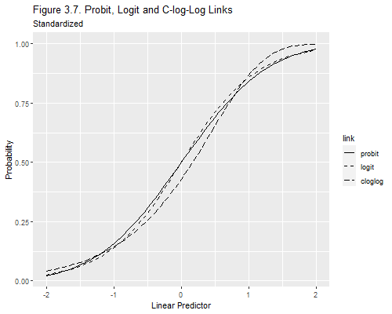

{% include r.css %}


<div id="other-choices-of-link" class="section level2">
<h2>3.7 Other Choices of Link</h2>
<p>Two brief notes on the latent variable formulation of binary response
models and the use of alternative links. First we plot three different
links in a standardized scale. Second we compare logit and probit
estimates for a model of contraceptive use.</p>
<div id="three-link-functions" class="section level3">
<h3>Three Link Functions</h3>
<p>Let us reproduce Figure 3.7, which shows the logit, probit and
complementary log-log link, after standardizing the latent variable so
it has mean 0 and variance 1. The probit link is based on the standard
normal distribution, which is already standardized. The logit link is
based on the standard logistic distribution, which has mean 0 and
variance π<sup>2</sup>/3. The c-log-log link is based on the extreme
value (log Weibull) distribution, with mean 0.577 and variance
π<sup>2</sup>/6.</p>
<pre class="r"><code>&gt; library(ggplot2)
&gt; library(tidyr)
&gt; z = seq(-2, 2, .05)
&gt; links &lt;- data.frame(z, probit = pnorm(z), logit = plogis(z*pi/sqrt(3)), 
+   cloglog = 1-exp(-exp(-0.577 + z * pi/sqrt(6))))
&gt; links.longer &lt;- pivot_longer(links, cols=c(&quot;probit&quot;, &quot;logit&quot;,&quot;cloglog&quot;), 
+   names_to=&quot;link&quot;)
&gt; png(filename=&quot;fig37r.png&quot;, width=500, height=400) 
&gt; ggplot(links.longer, aes(z, value, linetype=link)) + geom_line() +
+   scale_linetype_manual(
+   values=c(&quot;probit&quot;=&quot;solid&quot;, &quot;logit&quot;=&quot;dashed&quot;, &quot;cloglog&quot;=&quot;longdash&quot;)) +
+   ggtitle(&quot;Figure 3.7. Probit, Logit and C-log-Log Links&quot;, 
+     subtitle=&quot;Standardized&quot;) + ylab(&quot;Probability&quot;) + xlab(&quot;Linear Predictor&quot;)
&gt; dev.off()</code></pre>
<pre><code>png 
  2 </code></pre>
<p></p>
<p>As you can see, the logit and probit links are virtually
indistinguisable. The c-log-log link looks different, but one would
still need very large sample sizes to be able to distinguish it from the
others.</p>
</div>
<div id="a-probit-model" class="section level3">
<h3>A Probit Model</h3>
<p>We will fit a probit model to the data on contraceptive use by age
and desire for more children. Following the notes we will pick the
specification where age is treated linearly and we include an
interaction between age and desire for no more children. To simplify
interpretation of the interaction we center age at 30 years.</p>
<pre class="r"><code>&gt; library(haven)
&gt; library(dplyr)
&gt; cuse &lt;- read_dta(&quot;d:/dataweb/wws509/datasets/cusew.dta&quot;) 
&gt; cuse &lt;- mutate(cuse, agemc = c(-10,-2.5,5,15)[age], Y = cbind(users, nonusers))
&gt; probit &lt;- glm(Y ~ agemc*nomore, family=binomial(link=&quot;probit&quot;), data=cuse)
&gt; probit</code></pre>
<pre><code>
Call:  glm(formula = Y ~ agemc * nomore, family = binomial(link = &quot;probit&quot;), 
    data = cuse)

Coefficients:
 (Intercept)         agemc        nomore  agemc:nomore  
    -0.73741       0.01287       0.43898       0.03048  

Degrees of Freedom: 15 Total (i.e. Null);  12 Residual
Null Deviance:      165.8 
Residual Deviance: 29.01    AIC: 108.5</code></pre>
<p>Probit coefficients can be interpreted in terms of a standardized
latent variable representing a propensity to use contraception, or the
difference in expected utilities between using and not using
contraception.</p>
<p>We see that the propensity among women who want more children
increases with age at the rate of just over one tenth of a standard
deviation per year. More interestingly, the propensity is 0.44 standard
deviations higher among women who want no more children than among those
who want more at age 30. This difference increases by 0.03 standard
deviations per year of age, so it is 0.13 standard deviations at age 20
but 0.74 standard deviations at age 40. As a result, the propensity to
use contraception among women who want no more children is 0.04 standard
deviations higher per year of age.</p>
<p>It may be of interest to compare logit and probit coefficients. One
way to compare them is to divide the logit coefficients by π/√3 = 1.8.
This standardizes the logistic latent variable to have variance one, so
the coefficients have the same interpretation as a probit model. The
first two columns in the table below show that the two sets of
coefficients are in fact very similar</p>
<pre class="r"><code>&gt; logit &lt;- glm(Y ~ agemc*nomore, family=binomial, data=cuse)
&gt; data.frame(probit=coef(probit), std.logit=coef(logit)/(pi/sqrt(3)), 
+   amemiya=coef(logit)/1.6)</code></pre>
<pre><code>                  probit   std.logit     amemiya
(Intercept)  -0.73740780 -0.66570995 -0.75466518
agemc         0.01286865  0.01203162  0.01363934
nomore        0.43897588  0.40176119  0.45544636
agemc:nomore  0.03048069  0.02645902  0.02999459</code></pre>
<p>Gelman and Hill (2007), following Amemiya (1981), recommend dividing
by 1.6. This factor was chosen by trial and error to make the
transformed logistic approximate the standard normal distribution over a
wide domain. As shown in the third column above, it gives a somewhat
closer approximation to the probit coefficients in our example,
particularly for the interaction term. Of course the difference between
dividing by 1.8 or 1.6 is not going to be large.</p>
</div>
<div id="references" class="section level3">
<h3>References</h3>
<p>Gelman, A. and Hill, J. (2007) <em>Data Analysis Using Regression and
Multilevel/Hierarchical Models</em>. Cambridge: Cambridge University
Press.</p>
<p>Amemiya, T. (1981). Qualitative response models: a survey.
<em>Journal of Economic Literature</em>,
<strong>19</strong>:1483–1536.</p>
<p><small>Updated fall 2022</small></p>
</div>
</div>
